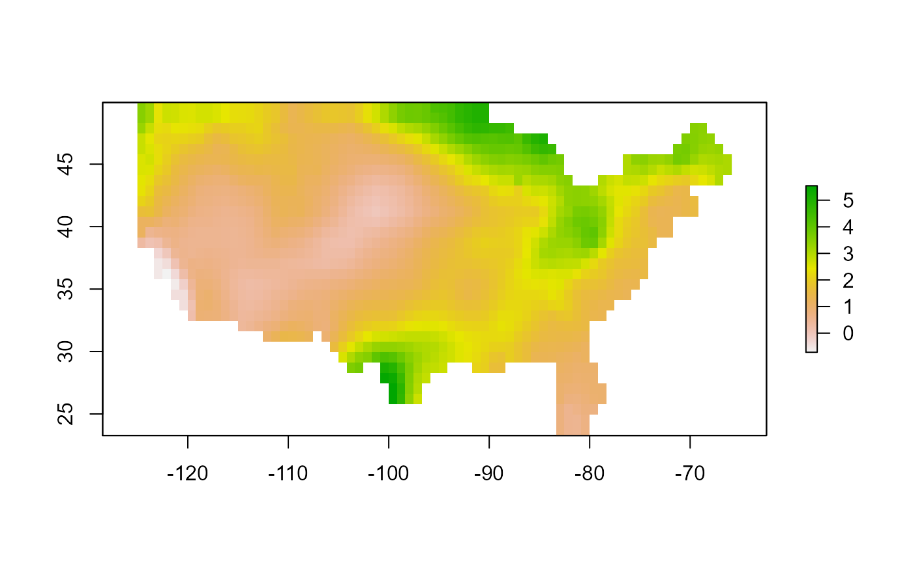
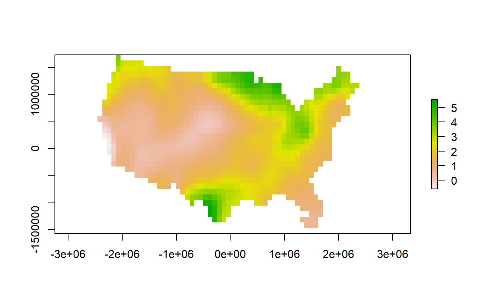
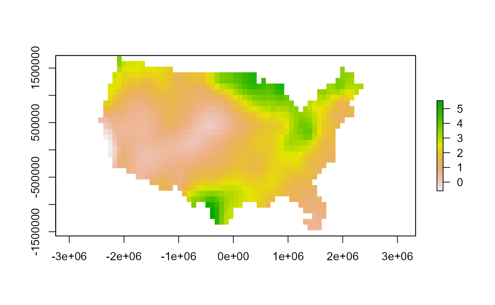
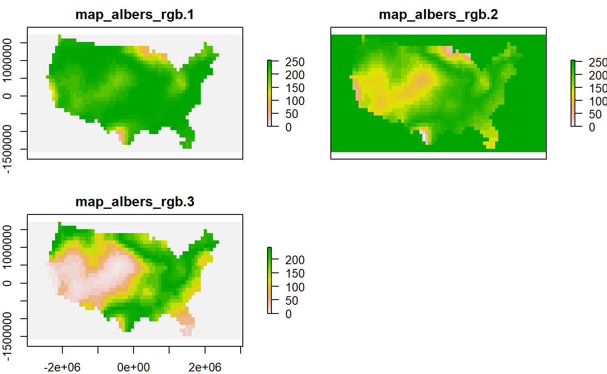
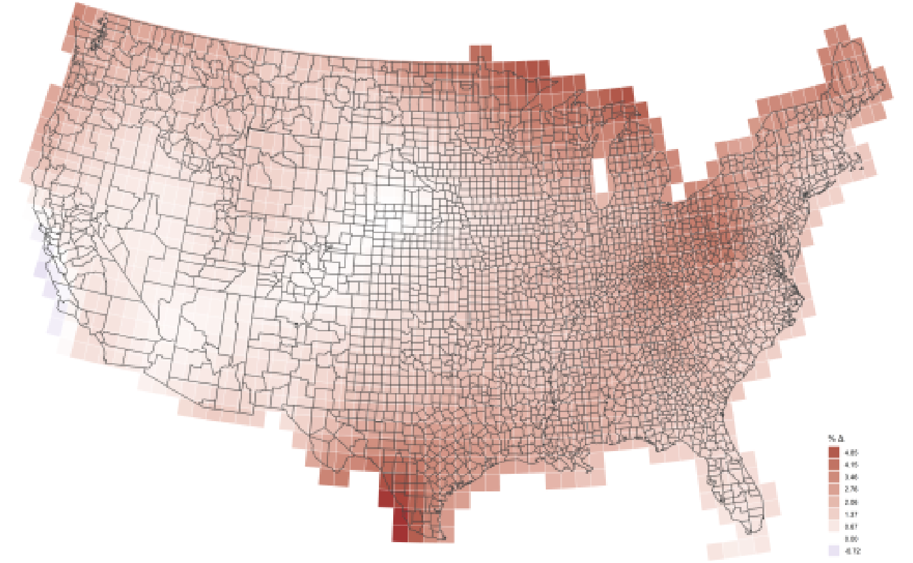

The tiler package provides a map tile-generator function for creating map tile sets for use with packages such as leaflet.
In addition to generating map tiles based on a common raster layer source, it also handles the non-geographic edge case, producing map tiles from arbitrary images. These map tiles, which have a “simple CRS”, a non-geographic simple Cartesian coordinate reference system, can also be used with leaflet when applying the simple CRS option. Map tiles can be created from a input file with any of the following extensions: tif, grd and nc for spatial maps and png, jpg and bmp for basic images.
Python is required as well as the gdal library for Python. For Windows users, this is not the same as simply having rgdal installed through R. You need to install gdal so that it is accessible by Python. One of the easiest and typically recommended ways to do this in Windows is to install OSGeo4W. It will bring all the required Python gdal library functionality along with it. OSGeo4W is also commonly installed along with QGIS.
On Windows for potential user convenience, the tiler package will perform a single check on package load for the OSgeo4W.bat utility at C:/Program Files/QGIS 3.0/OSGeo4W.bat. If found, its path is set in tiler_options. If it is not found at this precise location, the path remains unspecified and tiler will fall back on only calling Python during tiling operations, assuming hopefully that gdal will be available to Python nonetheless.
You should not rely on a gratuitous check like this; tiler is being overly generous. It is recommended that you simply add the paths for python.exe, and OSGeo4.bat if applicable, to your system path after installation. This way you do not need to provide these paths to tiler_options in each R session; R will know where they are just like on other operating systems. That’s all that should be needed. Linux and Mac users should not have to do any additional setup as long as Python and gdal for Python are installed.
For the sake of simple, expedient examples, the map tiles generated below all use small zoom level ranges. There is also no reason to attempt displaying the tiles here. To make these examples more informative, each raster is loaded and plotted for context, though this is not necessary to the tiling process. Loading the raster package is only needed here for the print and plot calls.
The example maps packaged with tiler are not representative of large, high resolution imagery that benefits from tiling. These maps are very small in order to minimize package size and ensure examples run quickly. But the tiling procedures demonstrated are the same as would be applied to larger images.
Lastly, consider the power of your system before attempting to make a ton of tiles for large images at very high resolutions. You could find that the system could hang at any one of a number of choke points. If you are attempting to make thousands of tiles for a large, high resolution image and your system is struggling, it is recommended to (1) try making tiles for only one zoom level at a time, starting from zero and then increasing while monitoring your system resources. (2) If this is not enough, find a better system.
Map tiles are generated with tile. tile takes an input file name file for the source map and a tiles destination path for where to save map tiles. The only other required argument is zoom, the range of zoom levels for the tiles. This is a string of the form, e.g. 3:7. In this and the subsequent examples zoom levels 0-3 are used.
library(tiler)
library(raster)
tile_dir <- file.path(tempdir(), "tiles")
map <- system.file("maps/map_wgs84.tif", package = "tiler")
(r <- raster(map))
#> class : RasterLayer
#> dimensions : 32, 71, 2272 (nrow, ncol, ncell)
#> resolution : 0.8333333, 0.8333333 (x, y)
#> extent : -125.0208, -65.85417, 23.27083, 49.9375 (xmin, xmax, ymin, ymax)
#> coord. ref. : +proj=longlat +datum=WGS84 +no_defs +ellps=WGS84 +towgs84=0,0,0
#> data source : C:\Users\Matt\Documents\R\win-library\3.5\tiler\maps\map_wgs84.tif
#> names : map_wgs84
#> values : -0.7205295, 5.545086 (min, max)
plot(r)
tile(map, tile_dir, "0-3")
#> Coloring raster...
#> Preparing for tiling...
#> Creating tiles. Please wait...
list.files(tile_dir)
#> [1] "0" "1" "2"
#> [4] "3" "doc.kml" "tilemapresource.xml"Listing the files in tile_dir shows the top level map tiles directories, 0-3 as expected. This is not printed in subsequent examples since it is not going to change.
Note that these examples rendered to HTML here do not capture the parts of the log output that result from the internal system call made by tile. When you run this example yourself you will see a bit more information at the console.
The previous example used a map with a geospatial coordinate reference system (CRS) but it was not projected. That map would be ready to view with the leaflet package for example, as would the tiles generated based on it. The next example uses a similar map that is projected. In order to generate map tiles that can be used with leaflet in the standard CRS, the map must be reprojected first. Then the same map tiles are generated as before.
map <- system.file("maps/map_albers.tif", package = "tiler")
(r <- raster(map))
#> class : RasterLayer
#> dimensions : 32, 71, 2272 (nrow, ncol, ncell)
#> resolution : 85011.74, 103363.8 (x, y)
#> extent : -2976297, 3059536, -1577300, 1730342 (xmin, xmax, ymin, ymax)
#> coord. ref. : +proj=aea +lat_1=29.5 +lat_2=45.5 +lat_0=37.5 +lon_0=-96 +x_0=0 +y_0=0 +ellps=GRS80 +towgs84=0,0,0,0,0,0,0 +units=m +no_defs
#> data source : C:\Users\Matt\Documents\R\win-library\3.5\tiler\maps\map_albers.tif
#> names : map_albers
#> values : -0.593978, 5.544724 (min, max)
plot(r)
tile(map, tile_dir, "0-3")
#> Reprojecting raster...
#> Coloring raster...
#> Preparing for tiling...
#> Creating tiles. Please wait...The tiles generated this time are the same as before, that is, ready for leaflet. tile reprojects the raster layer internally. This can be seen in the log output printed to the console.
If the CRS of the raster is NA, there are two options. By default, tile will fall back on processing the raster layer as if it were a simple image file with no geospatial projection information (see the next section on simple CRS/non-geographic map tiles). These tiles are not the same as the previous sets.
map <- system.file("maps/map_albers_NA.tif", package = "tiler")
(r <- raster(map))
#> class : RasterLayer
#> dimensions : 32, 71, 2272 (nrow, ncol, ncell)
#> resolution : 85011.74, 103363.8 (x, y)
#> extent : -2976297, 3059536, -1577300, 1730342 (xmin, xmax, ymin, ymax)
#> coord. ref. : NA
#> data source : C:\Users\Matt\Documents\R\win-library\3.5\tiler\maps\map_albers_NA.tif
#> names : map_albers_NA
#> values : -0.593978, 5.544724 (min, max)
plot(r)
tile(map, tile_dir, "0-3")
#> Warning in .proj_check(file, crs, ...): Projection expected but is missing.
#> Continuing as non-geographic image.
#> Coloring raster...
#> Preparing for tiling...
#> Creating tiles. Please wait...This is not likely what is wanted. The other option is to force set a known CRS if it is missing from the file or was dropped for whatever reason. Now reprojection can proceed and the expected tiles are generated.
crs <- "+proj=aea +lat_1=29.5 +lat_2=45.5 +lat_0=37.5 +lon_0=-96 +x_0=0 +y_0=0 +ellps=GRS80 +datum=NAD83 +units=m +no_defs +towgs84=0,0,0"
tile(map, tile_dir, "0-3", crs)
#> Reprojecting raster...
#> Coloring raster...
#> Preparing for tiling...
#> Creating tiles. Please wait...A note on reprojection: Depending on the nature of the data in a raster, the ... argument to tile allows you to pass through the method argument to raster::projectRaster. This is bilinear by default for bilinear interpolation, appropriate for continuous data. It can be set to ngb for nearest neighbor, appropriate for discrete or categorical data. If more control is needed over the reprojection, you should just prepare your raster file first before using tile. tiler is not intended to substitute for or wrap general geospatial processing tasks that can easily be done with other packages.
Being able to change the default color palette or specify color breaks is important. All other optional ... arguments to tile are passed to raster::RGB to provide control over the creation of an intermediary RGB raster. Most arguments to RGB can usually be ignored. The most useful ones are col and colNA for the data values color palette and the noData color, respectively. Coloring tiles differently for the original example is as simple as the following.
map <- system.file("maps/map_wgs84.tif", package = "tiler")
pal <- colorRampPalette(c("darkblue", "lightblue"))(20)
nodata <- "tomato"
tile(map, tile_dir, "0-3", col = pal, colNA = nodata)
#> Coloring raster...
#> Preparing for tiling...
#> Creating tiles. Please wait...Multi-band rasters are supported as long as they have three or four layers, in which case tile assumes these represent red, green, blue and alpha channel, respectively. Internally, single-layer raster files are colored and converted to a three- or four-band RGB/A raster object prior to tile generation. If file is already such a raster, this step is simply skipped. Optional arguments like data and noData color, break points, etc., are ignored since this type of raster contains its own color information.
map <- system.file("maps/map_albers_rgb.tif", package = "tiler")
(r <- brick(map))
#> class : RasterBrick
#> dimensions : 32, 71, 2272, 3 (nrow, ncol, ncell, nlayers)
#> resolution : 85011.74, 103363.8 (x, y)
#> extent : -2976297, 3059536, -1577300, 1730342 (xmin, xmax, ymin, ymax)
#> coord. ref. : +proj=aea +lat_1=29.5 +lat_2=45.5 +lat_0=37.5 +lon_0=-96 +x_0=0 +y_0=0 +ellps=GRS80 +towgs84=0,0,0,0,0,0,0 +units=m +no_defs
#> data source : C:\Users\Matt\Documents\R\win-library\3.5\tiler\maps\map_albers_rgb.tif
#> names : map_albers_rgb.1, map_albers_rgb.2, map_albers_rgb.3
#> min values : 0, 0, 0
#> max values : 253, 255, 244
plot(r)
tile(map, tile_dir, "0-3")
#> Reprojecting raster...
#> Preparing for tiling...
#> Creating tiles. Please wait...Almost all map tiles you encounter are for geographic maps. They have a geographic coordinate reference system (CRS). Software used to display these map tiles, such as Leaflet, is similarly focused on these kinds of map tiles. Everything is geared towards the dominant use case involving geospatial coordinate systems.
However, there are edge cases where non-geographic maps are required. These can be maps of outer space, game board maps, etc. The base map used to generate map tiles is usually a simple image like a png, jpg or bmp file. The coordinate reference system is a simple Cartesian coordinate system based on the matrix of pixels or grid cells that represent the image.
There is no longitude or latitude or more complex geospatial projection associated with these maps, which is why they are said to have a “simple CRS”. Simple does not necessarily mean easier to work with, however, because geospatial tools, like Leaflet for example, do not cater naturally to non-geographic coordinate systems. Using these map tiles in Leaflet is possible, but takes a bit of non-standard effort.
One example was shown previously where a spatial map lacking critical spatial reference information was processed as a simple image. In the example below, this is the intent. Here, the map is a png file. It is a previously saved plot of the Albers-projected US map used in the earlier projected geotiff example. You can see it has a color key legend. As a simple image, all of this will be tiled.
map <- system.file("maps/map.png", package = "tiler")
plotRGB(brick(map))
tile(map, tile_dir, "0-3")
#> Creating tiles. Please wait...The tile function will automatically process simple image files differently. There is no concept of projection, and coloring tiles is irrelevant because the image file has its own coloring already. Map tiles generated from regular image files can be used with leaflet if done properly. The generated tiles have a simple CRS that is based on the pixel dimensions of the image file. If you were to use these tiles in leaflet for example and you wanted to overlay map markers, you would have to first georeference your locations of interest based on the matrix rows and columns of the image. This is outside the scope of tiler. See the Leaflet JS and leaflet package documentation for details on using simple CRS/non-geographic tiles.
Other arguments to tile include format and resume.
format is either xyz (default) or tms. gdal2tiles generates TMS tiles, but XYZ may be more familiar. Tile format only applies to geographic maps. All simple image-based tiles are XYZ format. If setting format = "tms" you may need to do something similar in your Leaflet JavaScript or leaflet package R code for tiles to display with the proper orientation.
resume = TRUE simply avoids overwriting tiles by picking up where you left off without changing your set zoom levels and output path.
Map tiles must be served online to be of much use. Serving map tiles is not the purpose of tiler but using your GitHub account is an easy way to do this. Create a GitHub repository, enable GitHub pages for the repository in the repository settings. If the repository is exclusively for serving your map tiles, just set the master branch as the source for your GitHub pages. After committing and pushing your tiles to GitHub, you can access them using a URL of the form
https://<your account name>.github.io/maptiles/tiles/{z}/{x}/{y}.png
if you store your tiles in a folder named tiles in a repository named maptiles for example.
Here are some examples of non-geographic tile sets hosted on GitHub using Star Trek galaxy maps generated with tiler and here they are used in Leaflet maps.
The leaflet R code needed in order to use custom non-geographic tiles like these requires setting leafletOptions(crs = leafletCRS("L.CRS.Simple")) as well as calling addTiles(urlTemplate = url) where url is like the example URL shown above. Setting the focus of the map can be a bit tricky for non-geographic map tiles based on an arbitrary image file. It may take some trial and error to get a sense for the custom coordinate system.